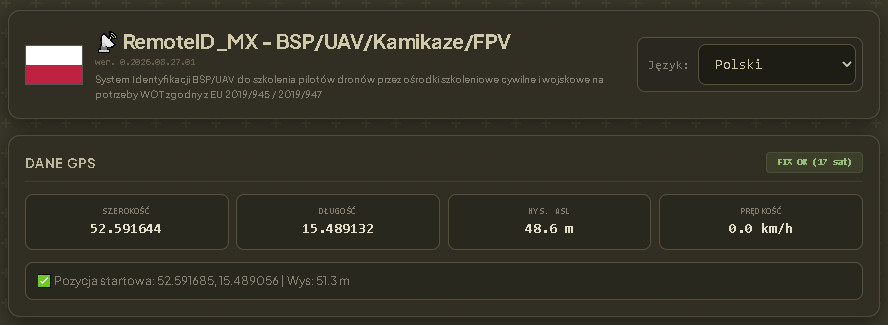
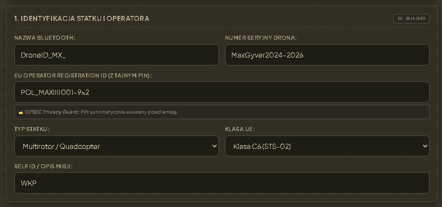
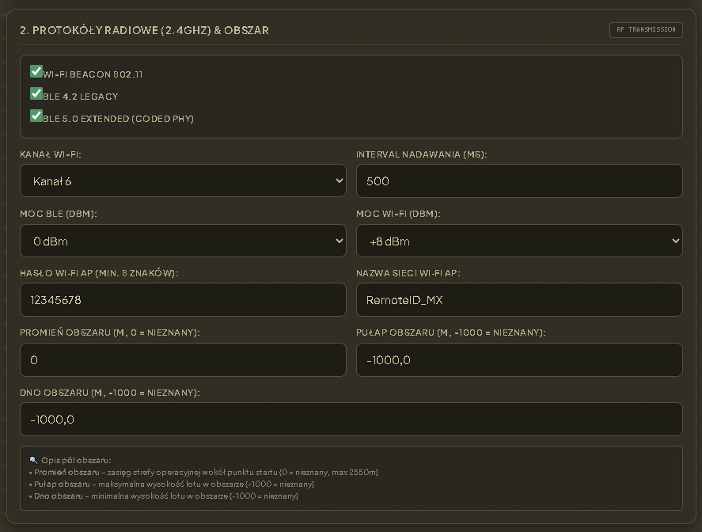
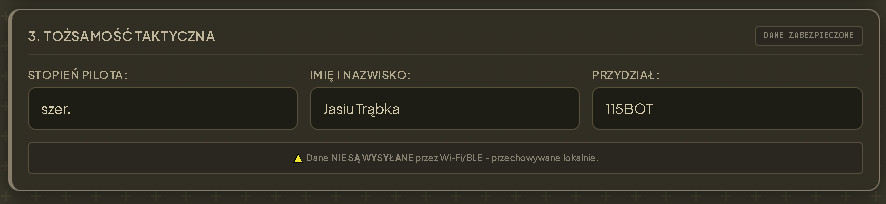
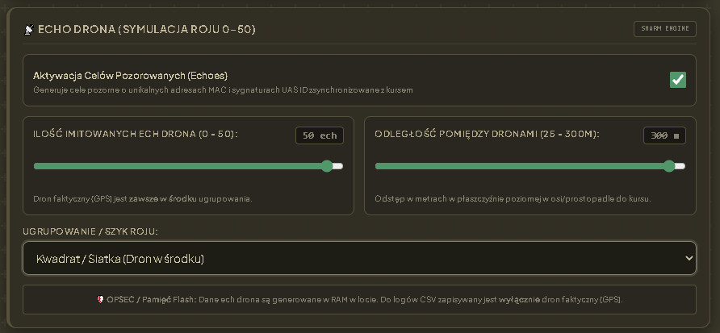
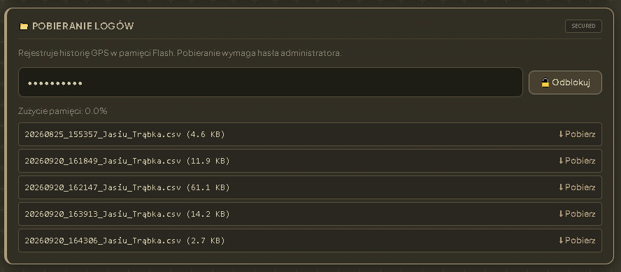
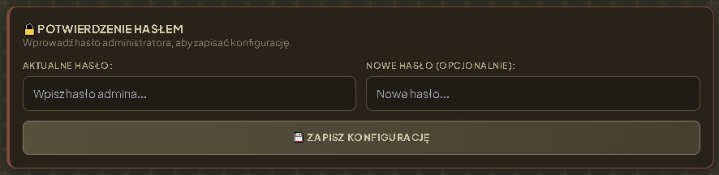
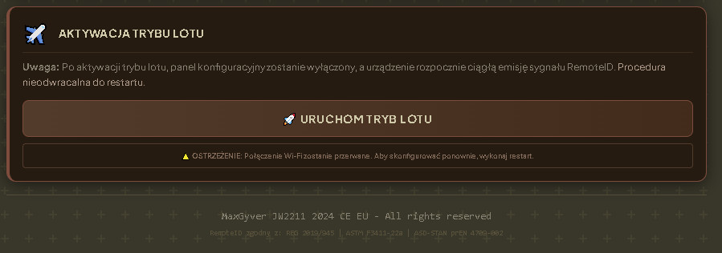

Taktyczny Odbiornik Remote ID — Mx PRO (v2)
REMOTE ID ODBIORNIK MX PRO • System detekcji, dekodowania OpenDroneID i agregacji roju dronów.
O odbiorniku — ogólne informacje
RemoteID_odbiornik_Mx PRO (v2) to zaawansowany stacjonarno-mobilny odbiornik sygnałów Remote ID najnowszej generacji. Urządzenie zostało zaprojektowane do wykrywania, identyfikacji oraz ciągłego śledzenia pozycji statków powietrznych (BSP) w czasie rzeczywistym. Baza dekodowania opiera się na oficjalnej bibliotece OpenDroneID (opendroneid-core-c), co gwarantuje 100% zgodności ze standardami ASTM F3411 oraz ASD-STAN.
Odbiornik wykorzystuje nowoczesny układ ESP32-C5 obsługujący wielopasmowy odbiór sygnałów na częstotliwościach 2,4 GHz oraz 5 GHz, a także łączność Bluetooth LE (BLE 4.2 Legacy oraz BLE 5.x Extended Advertising). System jest wyposażony w aktywne narzędzie agregacji danych (RID Aggregator), skaner RF oraz wielokanałową wysyłkę danych do oprogramowania dowodzenia TAK/ATAK/WinTAK i dedykowanych protokołów binarnych Mx (CBOR).
Specyfikacja techniczna i architektura kodu
Platforma i system: Urządzenie bazuje na mikrokontrolerze Espressif ESP32-C5, pracującym pod kontrolą systemu czasu rzeczywistego FreeRTOS w środowisku ESP-IDF / PlatformIO. Pamięć Flash wynosząca 4 MB została zoptymalizowana pod kątem maksymalnej wydajności i stabilności operacyjnej — zrezygnowano z podwójnej partycji OTA i systemu plików SPIFFS na rzecz jednej produkcyjnej partycji aplikacji (ok. 3.94 MB).
Architektura 4 plików źródłowych: Kod źródłowy firmware został zbudowany w rygorystycznym, modułowym rygorze 4 plików główne, co zapewnia minimalny narzut kompilacyjny, wysoki poziom audytowalności oraz gwarancję braku wycieków pamięci Heap:
main.c— inicjalizacja systemu, zadania FreeRTOS, scheduler RF, pętla główna i obsługa WDT (Watchdog).rid_core.c— warstwa HAL OpenDroneID (odid_hal_esp32), pętla dekodowania ramek RF, baza danych RID DB oraz algorytm agregacji celów.comms.c— protokół binarnego strumieniowania Mx (CBOR), silnik CoT (Cursor on Target), serwer Web UI oraz komunikacja WebSocket.config.c— pamięć NVS, zarządzenie konfiguracją, szyfrowana autoryzacja PBKDF2/scrypt, logi i diagnostyka.
Tabela partycji pamięci Flash (partitions.csv)
| Nazwa partycji | Typ / Subtyp | Adres Offset | Rozmiar |
|---|---|---|---|
| nvs | data / nvs | 0x9000 |
24 KB (0x6000) |
| phy_init | data / phy | 0xF000 |
4 KB (0x1000) |
| factory | app / factory | 0x10000 |
3.94 MB (0x3F0000) |
Scheduler RF i Agregacja Bazy Danych RID
Ze względu na pojedynczy tor RF w układzie ESP32-C5, odbiornik wykorzystuje zaawansowany Harmonogram Pracy Radia (RF Scheduler) zarządzający przełączaniem pasm. Pakiety odebrane z modułów BLE oraz Wi-Fi trafiają bezpośrednio do bufora pierścieniowego (lock-free ringbuffer), dzięki czemu proces skanowania nie blokuje rdzenia procesora.
Tryby Schedulera RF:
- FIXED: Sekwencyjny, sztywny czas skanowania okien (BLE 4.2 / BLE 5.x → Wi-Fi 2.4 GHz → Wi-Fi 5 GHz).
- AUTO: Dynamiczne dopasowanie czasów skanowania na podstawie natężenia ruchu radiowego w poszczególnych pasmach.
- SMART: Automatyczne wydłużanie okna dla pasma, z którego spływa najwięcej poprawnie odkodowanych ramek Remote ID.
Agregacja danych (RID Aggregator): Pojedynczy dron nadający jednocześnie przez BLE i Wi-Fi jest łączony w jeden spójny rekord taktyczny na podstawie unikalnego identyfikatora UAS ID (Basic ID). Baza danych mieści domyślnie 300 celów (konfigurowalne 200/300/500), stosując politykę automatycznego czyszczenia najstarszych nieaktywnych obiektów (LRU - Least Recently Used), zabezpieczając pamięć RAM przed wyczerpaniem.
Protokół Strumieniowy Mx (CBOR) i Integracja CoT / TAK
Odbiornik oferuje bezpośrednią gotowość do współpracy z zewnętrznym oprogramowaniem analitycznym (Python, Android, serwery dowodzenia) za pomocą binarnego, szybkiego protokołu Mx, opartego na standardzie CBOR (tinycbor). Dane są transmitowane przez interfejs TCP (port 5555) lub UDP Broadcast z pełną weryfikacją sumy kontrolnej CRC16-CCITT i numeracją sekwencyjną ramek.
Trzy niezależne kanały CoT (Cursor on Target):
- Kanał A (ESP32 SoftAP): Bezpośrednia wysyłka taktyczna do urządzeń połączonych z lokalną siecią Wi-Fi odbiornika (np. tablet z aplikacją ATAK).
- Kanał B (STA Router): Wysyłka danych do lokalnej sieci LAN/WLAN za pośrednictwem zewnętrznego routera.
- Kanał C (External TAK Server): Dedykowany strumień CoT przesyłany do zdalnego serwera wojskowego przez sieć IP.
Użytkownik ma do wyboru 3 profile danych CoT: STANDARD, FULL oraz CUSTOM (swobodna selekcja transmitowanych pól taktycznych).
Panel WWW — interfejs i konfiguracja
Interfejs użytkownika (Web UI) został wbudowany bezpośrednio w plik wykonywalny firmware (za pomocą zasobu EMBED_FILES), zapewniając błyskawiczne ładowanie bez zależności od dysków Flash. Strona dostosowana jest do stylistyki militarnej (odcienie khaki, grafitu i bursztynu). Poniższe zrzuty ekranu prezentują kluczowe moduły operacyjne i konfiguracyjne systemu odbiornika:

Nagłówek systemu oraz sekcja Dane GPS
Główna sekcja informacyjna interfejsu RemoteID_MX[cite: 14]:
- Informacje o systemie: Nagłówek identyfikacyjny BSP/UAV z numerem wersji oprogramowania układowego (np.
wer. 0.2026.03.27.01) oraz przeznaczeniem szkoleniowo-taktycznym[cite: 14]. - Szerokość i Długość geograficzna: Wyświetlanie współrzędnych GPS odbiornika w czasie rzeczywistym[cite: 14].
- Wysokość i Prędkość: Wysokość n.p.m. (HYS. ASL) oraz bieżąca prędkość poruszania się odbiornika[cite: 14].
- Status Fix: Liczba śledzonych satelitów (np.
FIX OK (17 sat)) oraz zapamiętana pozycja startowa drona[cite: 14].

1. Identyfikacja Statku i Operatora
Moduł parametryzacji danych certyfikacyjnych i tożsamościowych drona zgodnie z normą EU 2019/945 / 2019/947[cite: 10]:
- Nazwa Bluetooth: Rozpoznawalna nazwa identyfikacyjna nadajnika (np.
DroneID_MX_)[cite: 10]. - Numer Seryjny Drona: Dedykowany numer fabryczny lub taktyczny (np.
MaxGyver2024-2026)[cite: 10]. - EU Operator Registration ID: Numer rejestracyjny operatora UE wraz z tajnym PIN-em (np.
POL_MAXIIII001-9x2)[cite: 10]. Ochrona OPSEC Privacy Guard automatycznie usuwa PIN przed emisją[cite: 10]. - Typ i Klasa UE: Klasyfikacja statku (np.
Multirotor / Quadcopter) oraz klasa operacyjna UE (np.Klasa C6 (STS-02))[cite: 10]. - Self ID / Opis misji: Swobodny identyfikator taktyczny misji (np.
WKP)[cite: 10].

2. Protokoły Radiowe (2.4GHz) & Obszar
Konfiguracja parametrów nadawczych sygnału radiowego RF oraz strefy przestrzennej[cite: 12]:
- Wybór protokołów: Przełączniki dla Wi-Fi Beacon 802.11, BLE 4.2 Legacy oraz BLE 5.0 Extended (Coded PHY)[cite: 12].
- Kanał i Moc RF: Konfiguracja kanału Wi-Fi (np. Kanał 6), interwału nadawania w ms oraz mocy wyjściowej BLE (0 dBm) i Wi-Fi (+8 dBm)[cite: 12].
- Konfiguracja Wi-Fi AP: Nazwa SSID punktu dostępowego (np.
RemoteID_MX) oraz minimum 8-znakowe hasło dostępu[cite: 12]. - Wymiary Obszaru: Określenie promienia strefy operacyjnej wokół punktu startu (w metrach) oraz pułapu i dna obszaru[cite: 12].

3. Tożsamość Taktyczna
Wewnętrzne dane identyfikacyjne operatora i jednostki przechowywane bezpiecznie w pamięci lokalnej[cite: 13]:
- Stopień pilota: Stopień służbowy/wojskowy operatora (np.
szer.)[cite: 13]. - Imię i Nazwisko: Dane imienne pilota odpowiedzialnego za misję (np.
Jasiu Trąbka)[cite: 13]. - Przydział: Oznaczenie przydziału taktycznego lub podmiotu (np.
115BOT)[cite: 13]. - Bezpieczeństwo OPSEC: Ostrzeżenie potwierdzające, że dane osobowe NIE są wysyłane drogą radiową przez Wi-Fi ani BLE[cite: 13].

Echo Drona (Symulacja Roju 0-50)
Moduł generowania celów pozorowanych i imitacji formacji roju dronów (Swarm Engine)[cite: 9]:
- Generowanie pozoratorów: Generuje pakiety z unikalnymi adresami MAC i sygnaturami UAS ID zsynchronizowanymi z fizycznym kursem drona[cite: 9].
- Ilość imitowanych ech: Płynna regulacja liczby pozorowanych dronów w zakresie od 0 do 50 ech[cite: 9].
- Odległość między dronami: Ustawianie dystansu poziomego w osi lub prostopadle do kursu (25 – 300 m)[cite: 9].
- Formacja szyku: Wybór ugrupowania roju (np.
Kwadrat / Siatka (Dron w środku))[cite: 9]. - OPSEC Flash Memory: Dane ech są generowane wyłącznie w pamięci RAM w locie. Do dziennika CSV trafia tylko dron z fizycznym modułem GPS[cite: 9].

Pobieranie Logów z Pamięci Flash
Zabezpieczony panel eksportu zarejestrowanych tras i parametrów lotu z pamięci nieulotnej[cite: 11]:
- Autoryzacja dostępu: Dostęp do listy wymagający podania hasła administratora i kliknięcia przycisku "Odblokuj"[cite: 11].
- Pojemność Flash: Wskaźnik zużycia pamięci podręcznej (np.
Zużycie pamięci: 0.0%)[cite: 11]. - Lista zarejestrowanych tras: Zestawienie plików CSV zawierających znacznik czasu, nazwę misji oraz rozmiar pliku z możliwością szybkiego pobrania na urządzenie[cite: 11].

Potwierdzenie Hasłem i Zapis Konfiguracji
Moduł autoryzacji wymagany do zachowania zmian w pamięci NVS mikrokontrolera[cite: 7]:
- Weryfikacja tożsamości: Wprowadzenie aktualnego hasła administratora zabezpieczające przed nieuprawnionym nadpisaniem parametru[cite: 7].
- Opcjonalna zmiana hasła: Pole umożliwiające natychmiastową zmianę klucza administracyjnego[cite: 7].
- Przycisk zatwierdzający: Przycisk "ZAPISZ KONFIGURACJĘ" zapisujący pełny stan odbiornika[cite: 7].

Aktywacja Trybu Lotu
Ostateczne uzbrojenie urządzenia i przejście w autonomiczny tryb nadawczo-odbiorczy[cite: 8]:
- Wyłączenie panelu WWW: Po uruchomieniu panel konfiguracyjny zostanie wyłączony, a połączenie Wi-Fi przerwane w celu ochrony widma radiowego[cite: 8].
- Rozpoczęcie emisji: Rozpoczęcie ciągłego nadawania i odbierania sygnału RemoteID w wybranym trybie[cite: 8].
- Procedura nieodwracalna: Zabezpieczenie przed przypadkowym wyłączeniem — ponowna konfiguracja wymaga wykonania restartu sprzętowego[cite: 8].